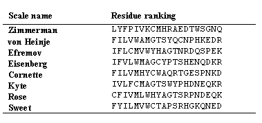

| 
Fig 5.1. Different residue rankings of commonly used hydrophobicity scales. While the scales differ in detail, there is a general consensus regarding the types of residue that appear at the most hydrophobic end (I, F, L, V and M) and those that appear at the most hydrophilic end (N, Q, E, D and K). |